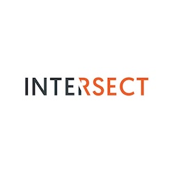

Some places I've worked at 💼
Technical Solutions Consultant Intern, May 2019 - August 2019
Toronto, ON
- Decreased monitoring infrastructure set up time by at least 150% for Google Cloud Platform projects by creating a Monitoring as Code tool in Python leveraging Google Cloud client libraries.
- Reduced the number of user-required fields when creating monitoring resources by 50% by implementing best practice defaults for 60+ metrics across 5+ Google Cloud products.
- Established and maintained test coverage of 90% by implementing 300+ robust unit tests.
- Established consistent lines of communication between stakeholders and leadership through frequent syncs, presentations and weekly status emails over 13 sprints resulting in clear visibility.

Intersect
Software Engineer Intern, January 2019 - May 2019
Toronto, ON
- Currently working as a Back End developer working with Ruby, Grape API, Ruby on Rails, Postman API Testing, Docker and RSpec. My work includes building a brand new coworking space platform for a client that offers private, exclusive worldwide hotels, spas, bars, cinemas and restaurants.
- Implemented feature to allow users to add payment options in order to be charged when booking coworking spaces.
- Implemeted password reset flow for users when resetting their password which includes leveraging the Mandrill API to send an email containing a reset token.
- Wrote several rake tasks to automate workflows within the team including running integration tests on Postman to ensure robust testing and that API endpoints adhere to Swagger definition.
Index Exchange
Software Engineer and Scrum Master Intern, May 2018 - August 2018
Toronto, ON
- Implemented multiple web applications with Angular 6, Docker, Material Design and Responsive Design by using Bootstrap grid to effectively create layouts and intuitive, mobile-friendly applications for entire departments.
- Established and maintained test coverage of 88% by implementing 150+ robust unit, integration, E2E tests, and continuous integration jobs leading to consistently high quality code being deployed to production.
- Optimized and revamped workflows by 50% by creating scalable web applications with a microservices architecture, leading to reduced time to blacklist domains on a global ad exchange.